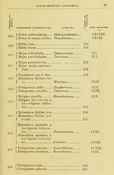

Referencias
- Rogelio, Á.J. 1987. Enciclopedia de México. Secretaría de Educación Pública, México.
Casiano Conzatti
1862 – 1951
¡Hola bambinos!, soy un delgado italiano que llegó a México a la edad de 19 años. Mi madre y mi hermano salimos de la bella Italia aprovechando un programa que facilitaba la migración de mi país a esta nación. Llegamos en un barco de vapor al puerto de Veracruz donde nos establecimos para trabajar en actividades agrícolas. Yo era bastante inquieto y quería ser maestro, así que inicié dando clases en las escuelas veracruzanas de Coatepec y Orizaba. La mayor parte de italianos que llegamos por aquella época nos establecimos en Veracruz. La población de Zentla fue el primer pueblo italiano que se construyó en México y nos dedicábamos a actividades relacionadas con el campo.
Este país me sorprendió bastante por la variedad de plantas que veía en los distintos paisajes por los que caminaba, lo que produjo en mí un interés muy grande por conocer más de ellas. Así que poco a poco empecé por mi cuenta con el estudio de ellas.
En 1891 tuve la oportunidad de mudarme a Oaxaca que en la actualidad se sabe es el estado más biodiverso de México. Ahí me hice cargo de la Escuela Normal. Entre mis actividades buscaba espacios para realizar exploraciones en el estado con la finalidad de buscar y recolectar plantas. Algunas las entregué a distintos herbarios y otras formaron parte del mío donde las ordenaba de acuerdo a su forma.
En el año de 1910 cuando surge la Revolución mexicana yo me las arreglaba para organizar el Jardín Botánico de la Escuela Experimental Agrícola de San Antonio de la Cal.
En 1915 Por invitación de Don Alfonso L. Herrera me trasladé a la Ciudad de México para hacerme cargo de la Jefatura de Sección del Instituto de Biología General y Medicina lo cual me llenó de mucho orgullo. Pero tres años después regresé a Oaxaca y realicé expediciones al interior del estado como naturista explorador de la Dirección de Estudios Biológicos.
Mi mayor aportación a la biología mexicana la llamé "La Flora Taxonómica mexicana". Y me siento muy orgulloso de ella ya que en esta colección reúno plantas de todo el país. En el año de 1950 dejo para siempre este maravilloso país que los italianos llamamos Messico.
Mis favoritos
- Árbol del tule, Oaxaca
- Foto: Carlos Galindo Leal / Banco de imágenes, CONABIO
Mis lugares
Mis ideas

- Flora sinóptica mexicana
- Fuente: archive.org
- Monografia del árbol de Santa Maria del Tule. Casiano Conzatti
- Fuente: archive.org